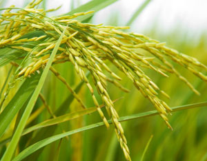

ISTOCKPHOTO/SZE FEI WONG
Rice grows best in areas with long, warm growing seasons, but you can try your hand with rice no matter where you live by planting small amounts in plastic buckets and setting them in a sunny spot outside or indoors under lights.